TODO: my intro, interests hobbies, motion planning, particle systems, physics, sixth sense, escape room, drive, project demo clips, climbing clips
the world
- 2D wall
- points representing holds
- has a start hold and a finish hold
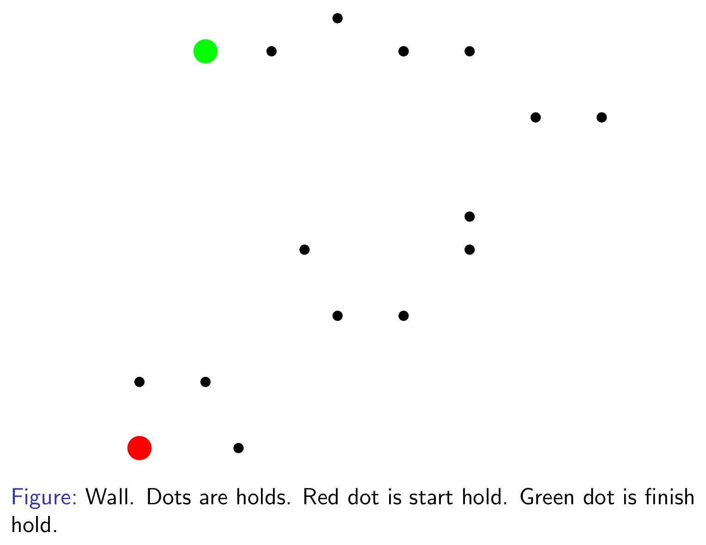
chain agent
- line segments connected via revolute joints
- can be chained
- one free end can latch to a hold in wall
- controlled via joint angles
- N line segments gives N "R" joints (including latch)
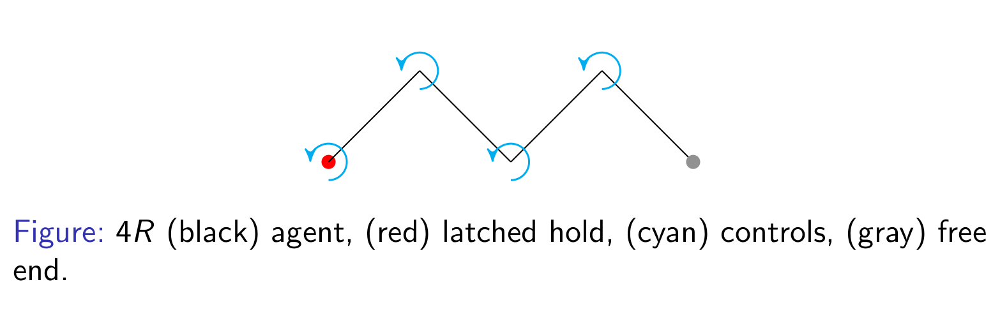
the task
- To plan the motion of an agent in realtime, so that it reaches the finish hold following the world rules
- To make the motion natural (human/animal-like) using simple heuristics
the motivation
- In games, this can be used to improve climbing character animation
- As robots, they can climb difficult and challenging terrain for reconnaissance and rescue missions
- Can generate new climbing routes and detect dangerous ones
- Super fun to watch agents/robots climb walls
Lot of recent progress in character animation for walking, running, jumping, dribling, swimming
TODO: add gifs and cite
Not a lot explicity in climbing
TODO: add gifs and cite
PRM/A* + IK
- Split the task
- Plan in holds space using Probabilistic Roadmap and A*(or D*-Lite) search
- Move from hold to hold using Inverse Kinematics
simplest case - 2R chain - IK
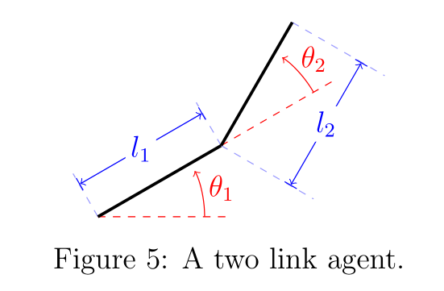
- Free end spans a concentric donut with inner and outer radii $| l_1 - l_2 |$ and $l_1 + l_2$
- Given goal point is in the span
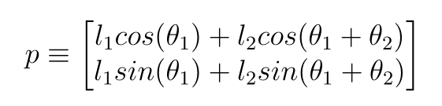
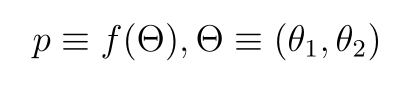
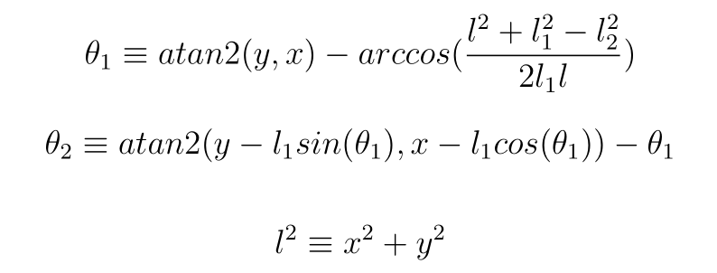
- $ l = 0 \rightarrow l_1 = l_2 \& (x, y) = (0, 0) \rightarrow \theta_2 = 180^\circ $
simplest case - 2R chain - IK
Analytical solve for goal joint angles given a goal point in the span
Linearly interpolate from current joint angles to goal joint angles
Switch pivot once reached
Switching pivot - implementation detail
- When switching pivot joint angles have to be reassigned, since this is new IK problem
- Pivot position is the previous free end position
- Order of lengths of links are reversed
- From the dynamics $q_{new} = [\sum_{i=1}^{n} q_i - \pi, -q_{n-1}, ..., -q_{1}]$
simplest case - 2R chain - PRM
- PRM edge lens can be clamped b/w $| l_1 - l_2 |$ and $l_1 + l_2$ to ensure reachability of free end
simplest case - 2R chain - demo
BG: joint angle space, Red: goal, Blue: current
simplest case - 2R chain - tradeoffs
- With proper PRM edge lens, PRM path existence guarantees reachability
- One IK solve per hold in the PRM generated path
nR chain - IK
- Too many degrees of freedom, therefore no general analytical solution
- Employ iterative solutions
nR chain - IK - Jacobian Transpose
Given goal point is in the span
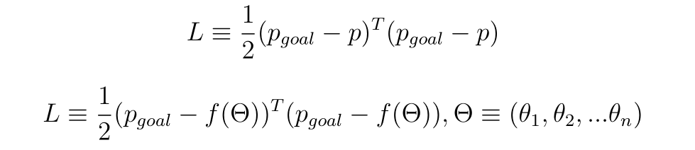
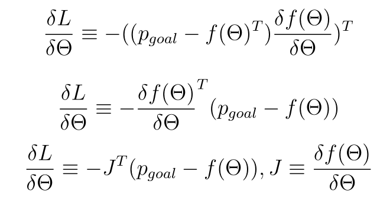
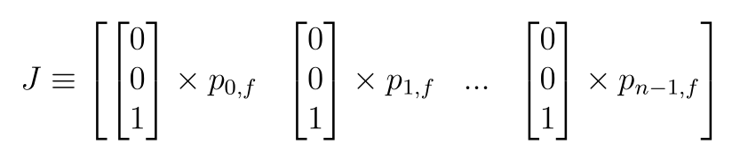
simple, fast, looks natural, decently numerically stable
might take long time to converge depending on gradient magnitude
Ex. 4R chain - Jacobian Transpose
nR chain - IK - Pseudo Inverse
Given goal point is in the span
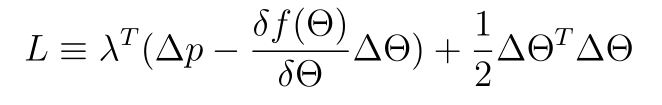
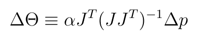
produces shorted free end path
contains matrix inversion, so can be numerically unstable
Ex. 4R chain - Pseudo Inverse
nR chain - tradeoffs
- With proper PRM edge lens, PRM path existence guarantees reachability
- One IK gradient step per tick
- Multiple solutions exist, no control over what we are convering onto
nR chain - n >> 1 - can simulate worms
Climb cycle
- A cyclic state machine to animate climbing motion
Two arm
- Two arms modeled using 2 nR chains
- Independent motion but connected at neck
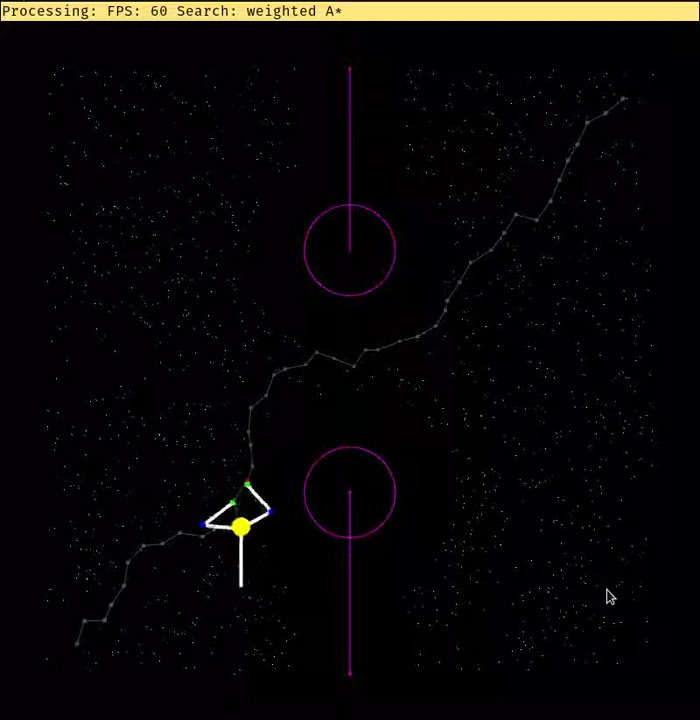
Two arm - Climb cycle
- Move a random arm to the next milestone
- Move neck below the latest moved arm
- Move the other arm
- Go to step 1
Four arm
- Four arms modeled using 4 nR chains
- Independent motion but connected at neck and tail, neck to tail line segment is always vertical
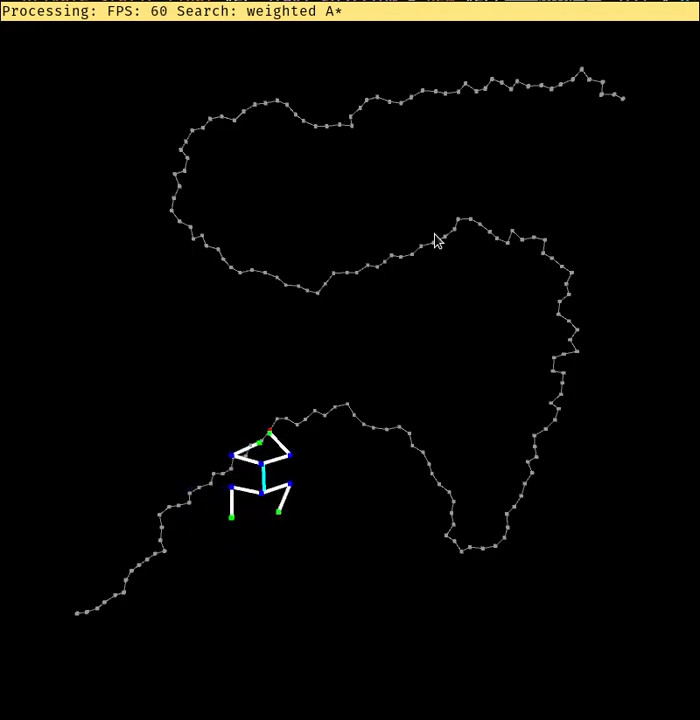
Four arm - Climb cycle
- Move a random arm to the next milestone
- Move neck and tail below the latest moved arm simultaneously
- Move the opposite leg to a certain tuned displacement from tail
- Move the other arm next milestone
- Move neck and tail below the latest moved arm simultaneously
- Move the opposite leg to a certain tuned displacement from tail
- Go to step 1
Planning hierarchy - Until now
- Hold space planning using PRM/A*
- Orchestrating arms using climb cycle
- Hold to hold using analytical/iterative IK
Computational bottlenecks - Until now
- IK gradient descent step - matrix multiplications or inverses
Pros - Until now
- Reasonable reachability guarantees for chain agents
- Reachability guarantees are only as good as the climb cycle
- Pretty good motion
Cons - Until now
- No control over descent i.e. pose attained
- 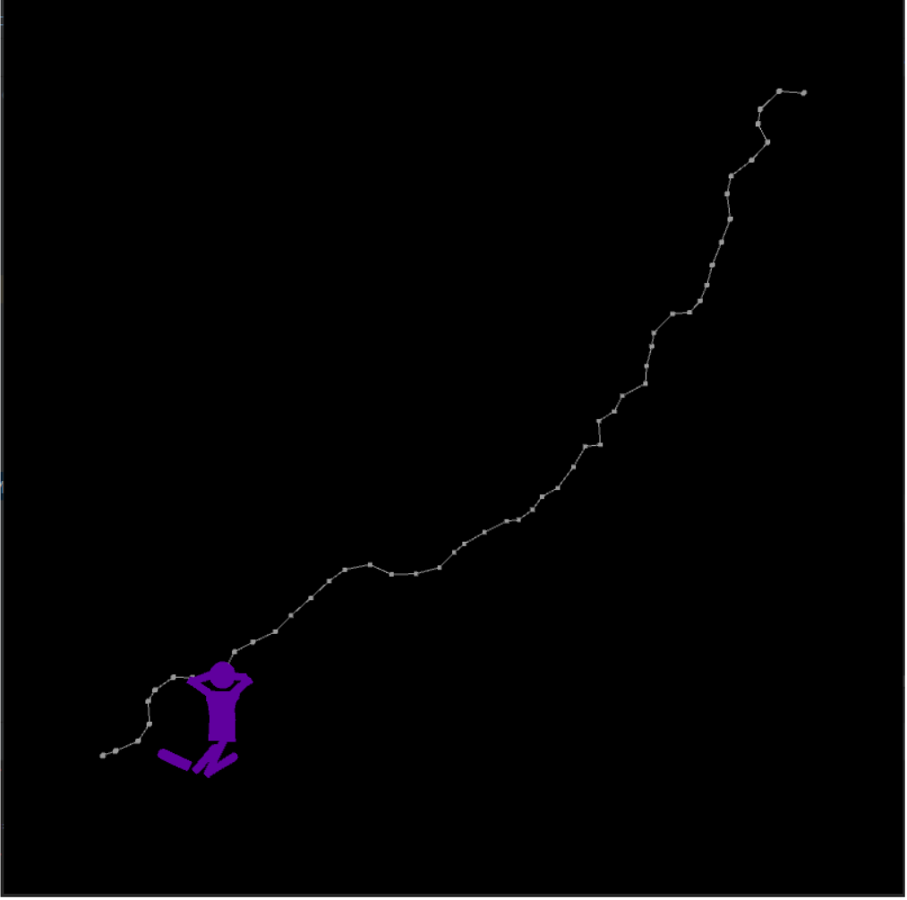
- No multi limb coordination
- No considerations of gravity
- No variance in generated motion during IK phase
Fixes
- To prevent unwanted poses the joint angle domain can be restricted. Previously $(-\infty, \infty)$, now something like $[-30^\circ, 60^\circ]$
- To enable multi limb coordination instead of modelling two arms as independent nR chains, model it as single 2nR chain
- To add the effect of gravity, add center of mass terms into gradient descent
Switching pivot with angle constraints - GORY IMPL detail
- In addition to previous steps for switching pivot we also need to reassigned joint angle clamps
- Due to sigma term in angle reassignment, first and last angles cannot be clamped
Gravity
- Adding gravity term to the loss function for gradient descent
- 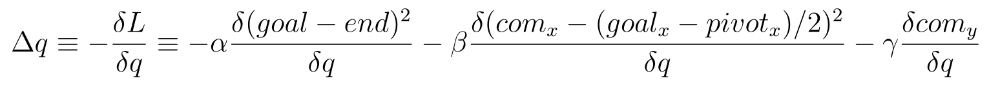
- 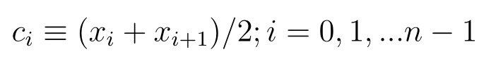 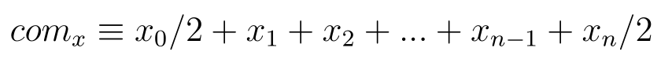
- 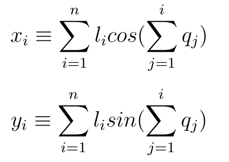
- Everything is expressed in terms of joint angles
Gravity - impl detail
- As is the time complexity of calculating these terms is $O(N^3)$
- But using substructres (dynamic programming) we can bring it down to $O(N^2)$
with and without gravity
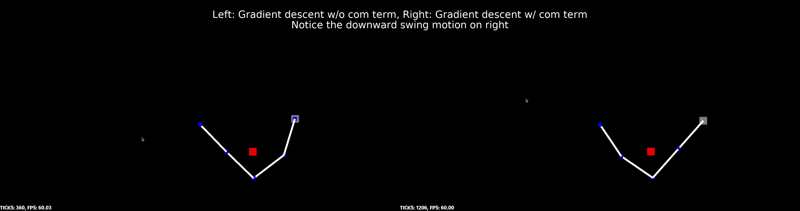
New problems
- Constraints + Gradient descent = local minima
- Can be mitigated but still a core problem
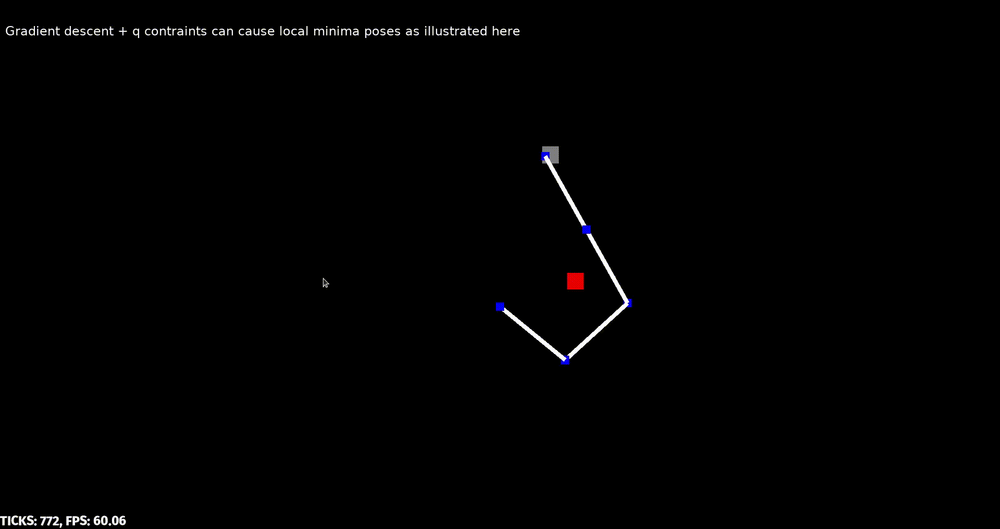
Montecarlo methods - Arbitrarly close global IK solves
- To prevent bad local minima we need general global IK solves
- But there are none for n > 2!
- So comprimise. Go for approximate global solves
No prior random sample solve
- Given a goal free end position, sample many joint angle tuples within clamps
- Compute the loss function for each tuple
- Keep track of tuple that gives closest to goal
- Can be made arbitrarily close to global optimum
- Parallelizable
No prior random sample solve
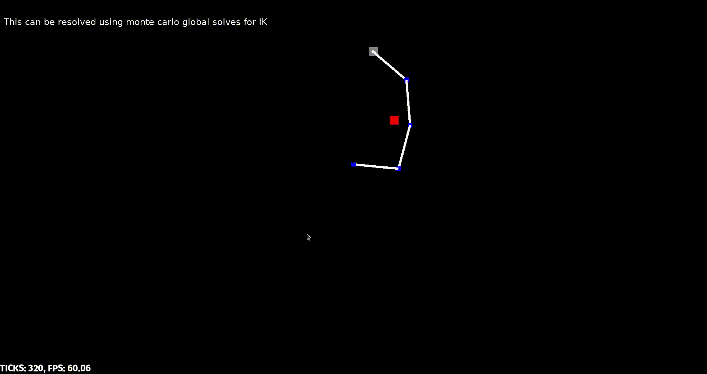
Current state random sample solve
- Similar to no prior random sample solve
- Instead of uniformly sampling the tuple in the clamps space, start from current joint angle space
- Sample around the current state, keep track of best tuple, and repeat from there
- More prone to local minima than former, but faster
- Can be made arbitrarily close to global optimum
- Parallelizable
Integration with gradient descent
- Since monte carlo methods bring approximately close to goal, use gradient descent from there to snap to goal
- In practice
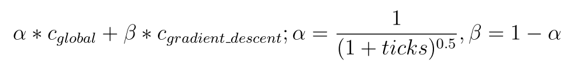
Perks
- Due to impl detail, clamps could not be enfored on first and last angles
- But with monte carlo methods we can enforce (pseudo) clamps while sampling
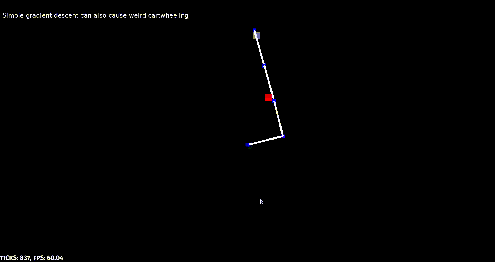
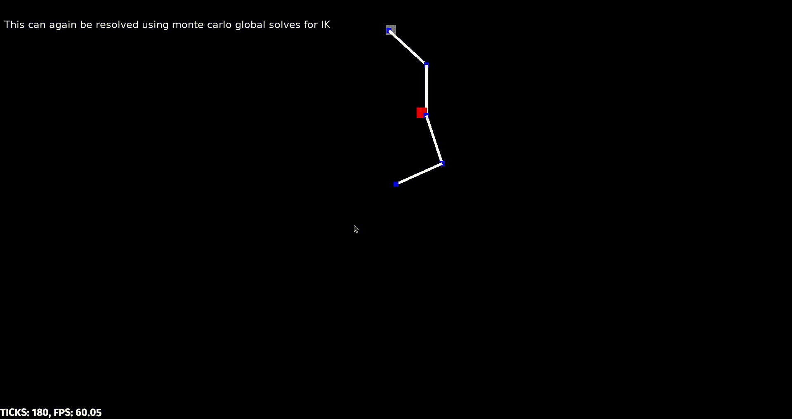
Perks
- Due to nature of monte carlo solves the generated motion has variance even during IK phase
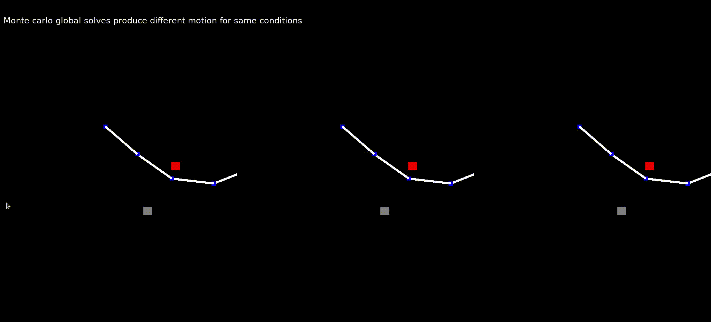
Matching hands
- Always switching pivots won't work
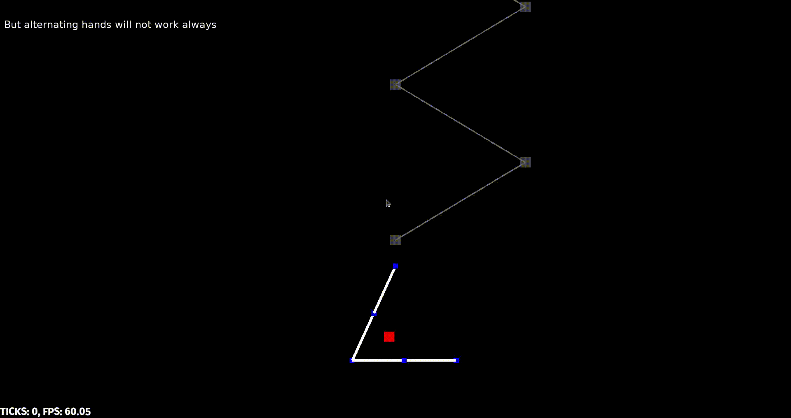
Matching hands
- Simple climbers solution, match hands
- If agent is reaching with left hand but goal on on right of pivot (or) If agent is reaching with right hand but goal on on left of pivot
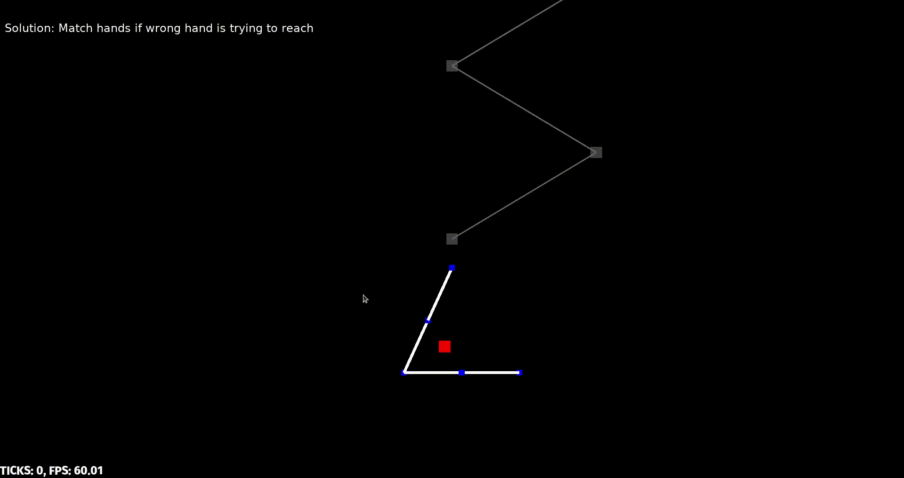
Summary and roadmap and impact
Future work
Scaling / composing for general tree agent